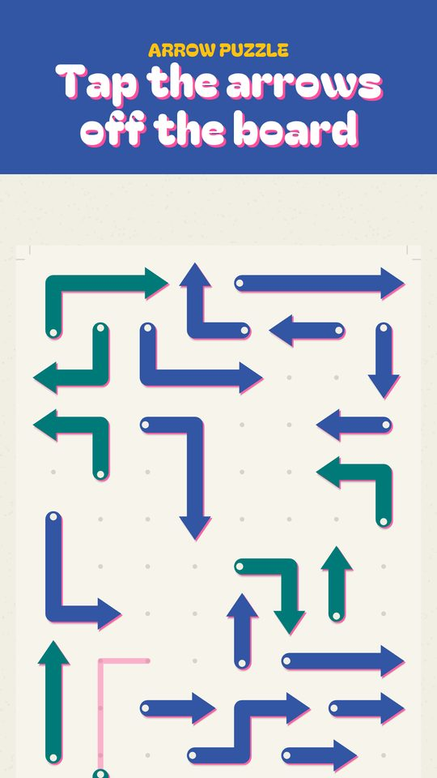
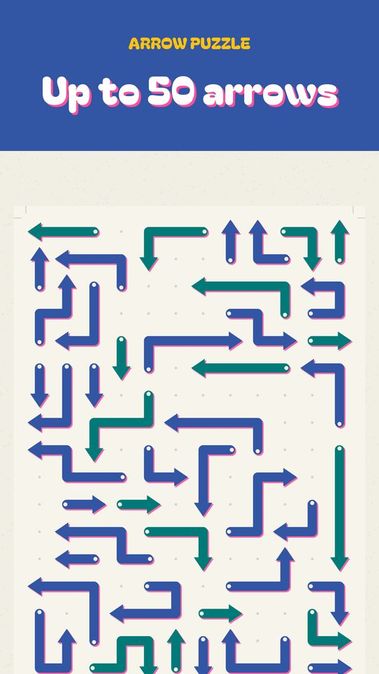
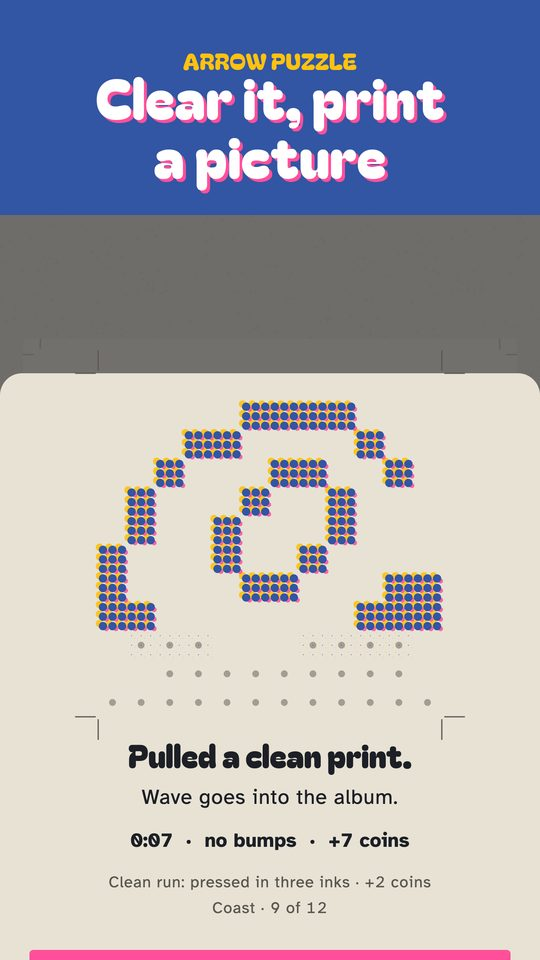
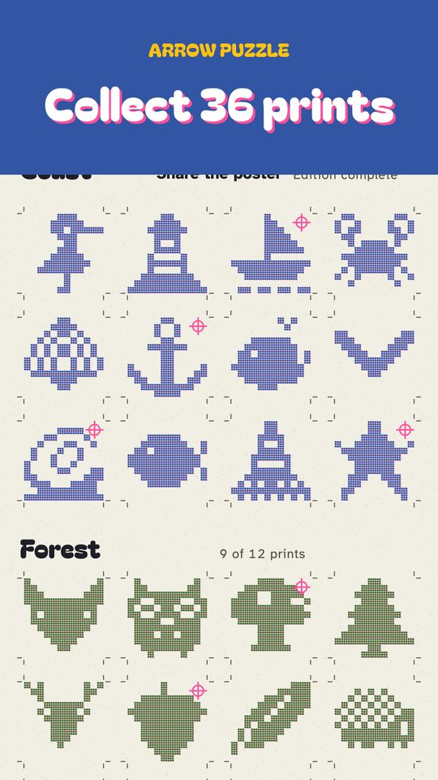
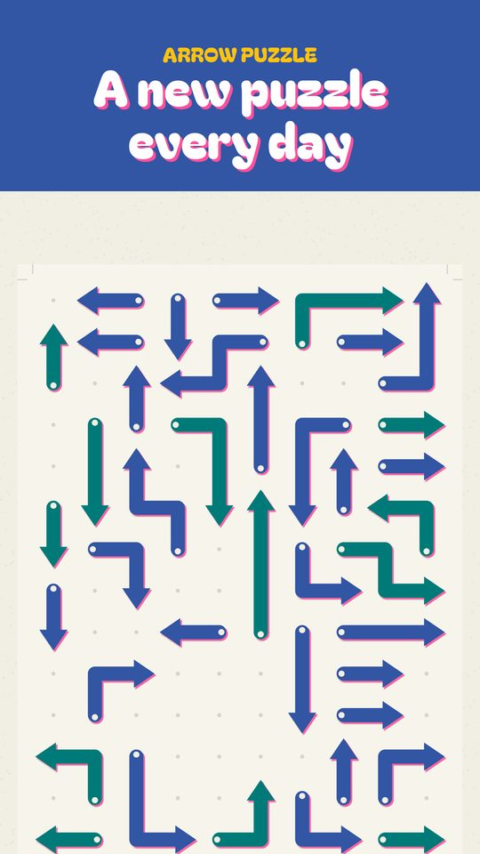
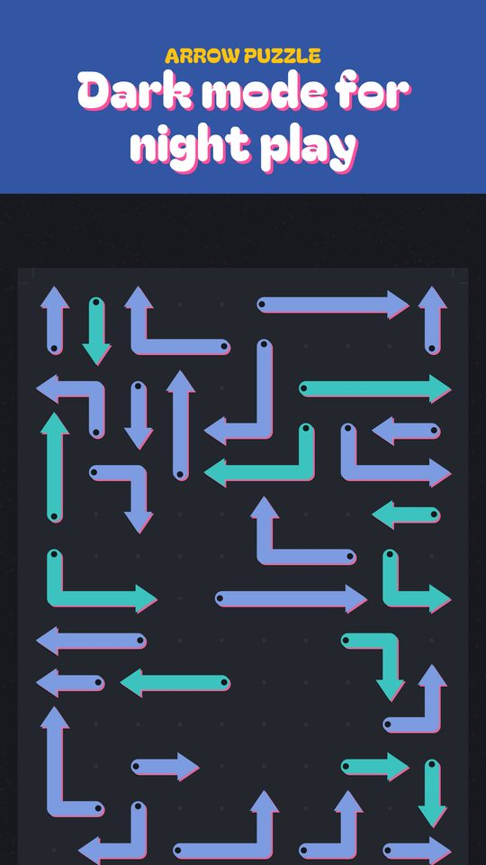

Slipway is an arrow puzzle game for Android. Every arrow wants to leave the board the way it points, but only one with a clear lane can go. Pick the right order and the board empties; pick wrong and the arrow bumps whatever is in the way and springs back. Some arrows bend around corners like a snake and slide out along their own body, which makes you look further ahead than a straight-arrow game does.
Screenshots







At a glance
- Genre: arrow puzzle, logic puzzle, tap-away / unblock puzzle
- Platform: Android phones and tablets
- Offline: yes, everything works with no Wi-Fi
- Boards: a Journey that grows from a few arrows to 13 × 19 grids with 50 or more, plus a Daily Print every day
- Languages: English, Spanish, Japanese
- Price: free with ads between some boards; Remove Ads is a one-time purchase
- Account: none, progress stays on your phone
What makes it different
Arrows that bend
Most arrow puzzles use straight pieces. In Slipway an arrow can turn corners, and when it leaves it follows its own body out, so a bent arrow can block two lanes at once.
A print for every clear
Each cleared board presses a two-colour riso print into your Print Album: a heron, a lighthouse, a fox, a teapot. Three editions of twelve prints to collect.
The Daily Print
A new daily arrow puzzle, the same for everyone. Keep a streak and share a card that shows the print but never the solution.
Peek before you tap
Hold an arrow to see its lane. A clear lane shows in blue; a blocked one shows exactly what is in the way.
Share a board code
Every board has a six-character code. Send it to a friend and see who clears it with fewer bumps.
Tips
Stuck on a big board? Read how to solve arrow puzzles: seven tips that work on any board.
Questions
- How do you play an arrow puzzle?
- Tap an arrow and it slides off the board in the direction it points, but only if nothing blocks its lane. Clear every arrow to finish the board. In Slipway some arrows bend around corners and slide out along their own body.
- Does Slipway work offline?
- Yes. Every board, the Daily Print and the album work with no Wi-Fi or mobile data, and there is no account.
- Is every board solvable?
- Yes. Boards are built backwards from an empty grid, so every board has at least one order that clears it.
- Is Slipway free?
- Slipway is free to play with ads between some boards. Remove Ads is a one-time purchase, and the optional Slipway Pass subscription removes ads and adds unlimited hints.
- Is there a daily arrow puzzle?
- Yes. The Daily Print is a new board every day, the same one for everyone, with a streak to keep.